大家好，我是江枫
还记得我之前介绍过的refly平台么？这是一个完全的vibe workflow平台，通过输入自然语言，就可以生成完成的工作流。
n8n/coze不用学了，Vibe Workflow真的来啦！附一手实测
现在refly平台更进一步：推出了Refly Skills。
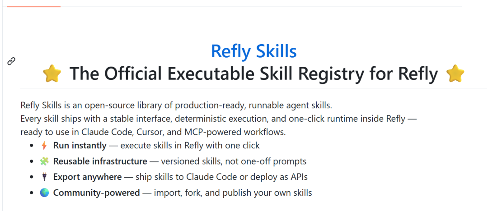
也就是说，以后创建工作流，都不需要登录refly平台。在Claude code中就可以进行工作流创建并发布
最近OpenClaw不是大火么，你甚至可以在OpenClaw中安装这个skills。在飞书，QQ，微信上给机器人下指令，就可以后台工作流自动创建，发布。
总结了Refly Skills的6个特点。
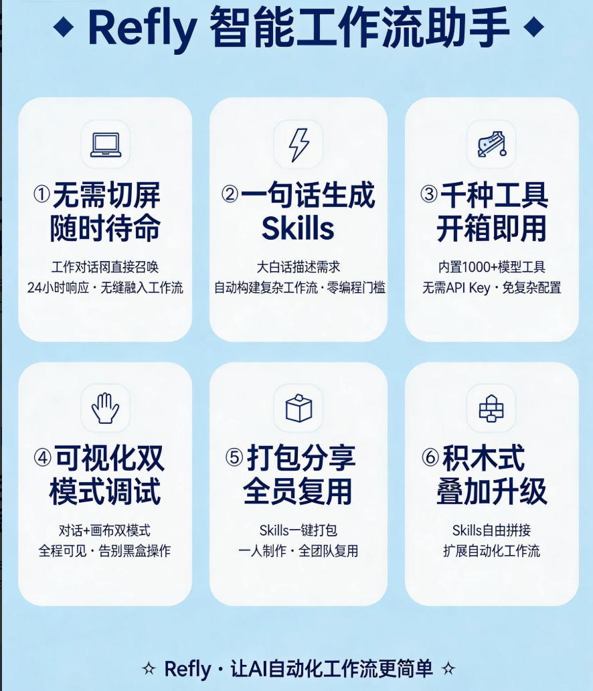
从此vibe workflow不再局限某个平台，随时随地都可以进行工作流的创建
假期这几天，我已经深度使用了，非常好使，特别是电商和自媒体场景
这篇文章教会大家如何使用
01
安装refly Skills
refly Skills已经开源，地址如下：
https://github.com/refly-ai/refly-skills
你可以在Claude Code或者OpenClaw直接把这个链接丢进去自动安装
也可以通过命令安装
npm install -g @powerformer/refly-cli@0.1.25
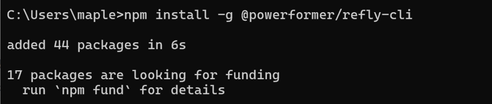
安装好之后，需要进行refly平台的授权和认证，运行命令: refly init
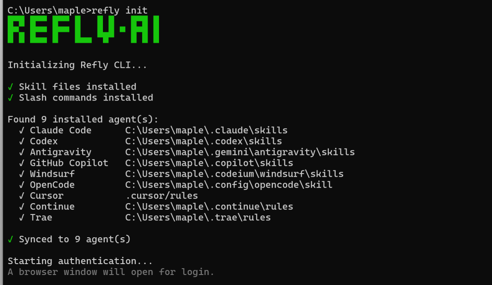
然后会弹到浏览器中进行认证
记录下生成的Verification Code
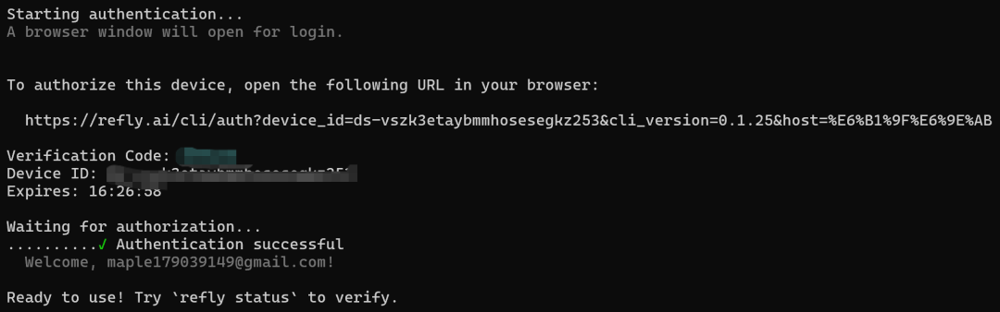
在认证界面输入后，就完成了认证，refly skills就可以正常使用了
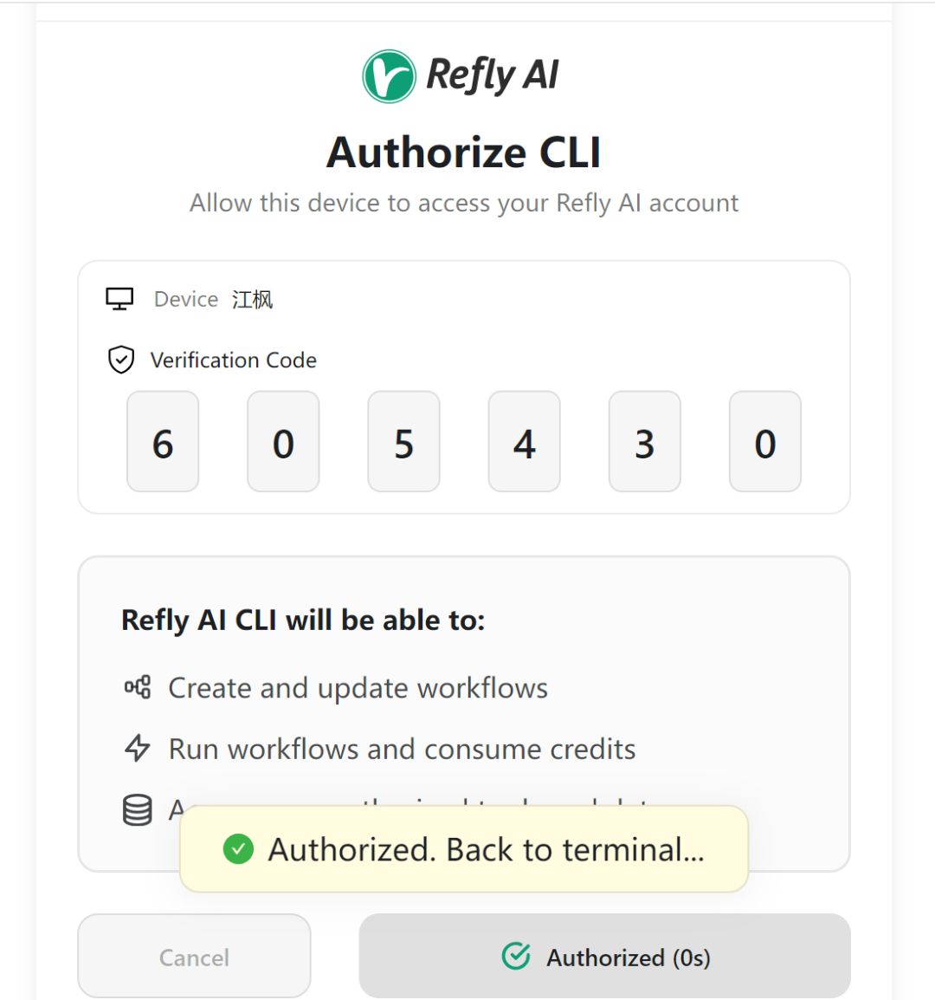
Claude Code中可以看到refly的skills.
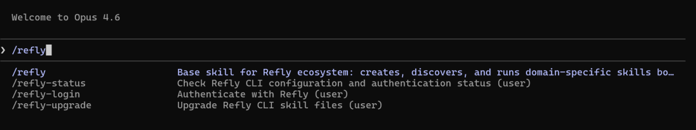
下面来看Refly skills的几个具体使用场景
02
一键复刻n8n工作流
做过海外电商工作流的朋友们应该经常逛n8n官网，去里面查找优秀的n8n模板
现在你可以把n8n的json文件下载下来，丢给Refly skills，让它学习搭建同样功能的工作流并发布
我的输入如下。
请参考ya-ma-xun-jia-ge-yu-jing-pin-zhi-neng-zhui-zong-dui-bi.json工作流，并复刻这个工作流到refly环境
在学习完n8n工作流后，Refly skills会去根据自己的工具集匹配功能
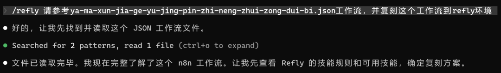
等待1分钟的样子，工作流复刻完成并同时上传到了Refly平台，还给出了访问链接
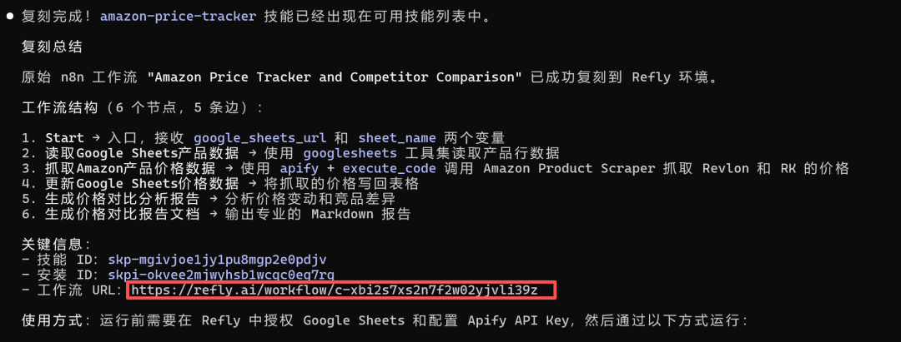
登录Refly平台，
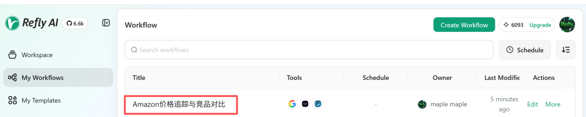
这就是一个完整的可运行的工作流，需要的技能，工具，提示词都完全具备。
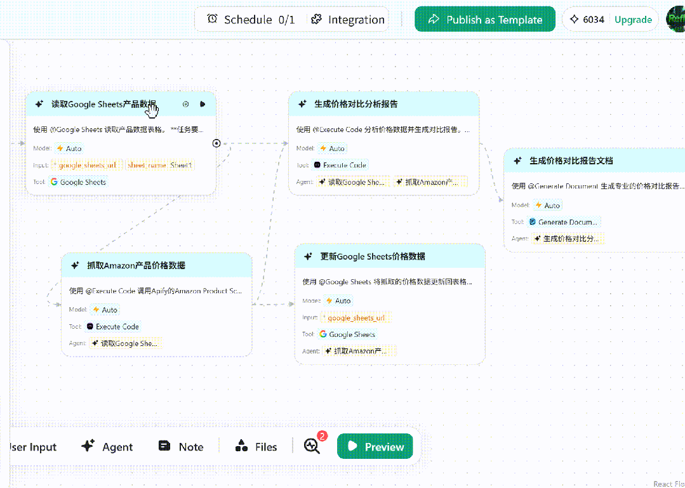
这种快速复制能力意味着平台之间的快速迁移能力，对于工作流的部署是真的非常方便
02
自然语言生成工作流
前面来看通过自然语言调用Skills生成工作流
输入如下：
帮我调研下最近一个月在亚马逊上圣诞树竞品调研报告
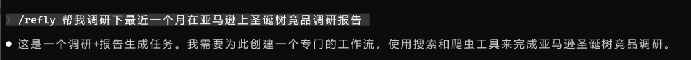
下面的执行过程，能清楚的看到，当找不到对应平台的工具的时候，Skills会自动调整方案，利用已有的工具库来完成方案
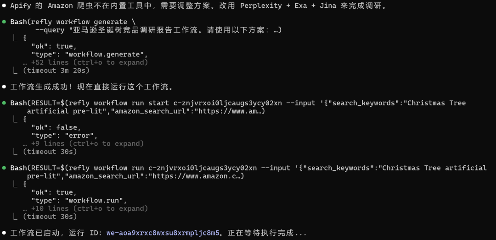
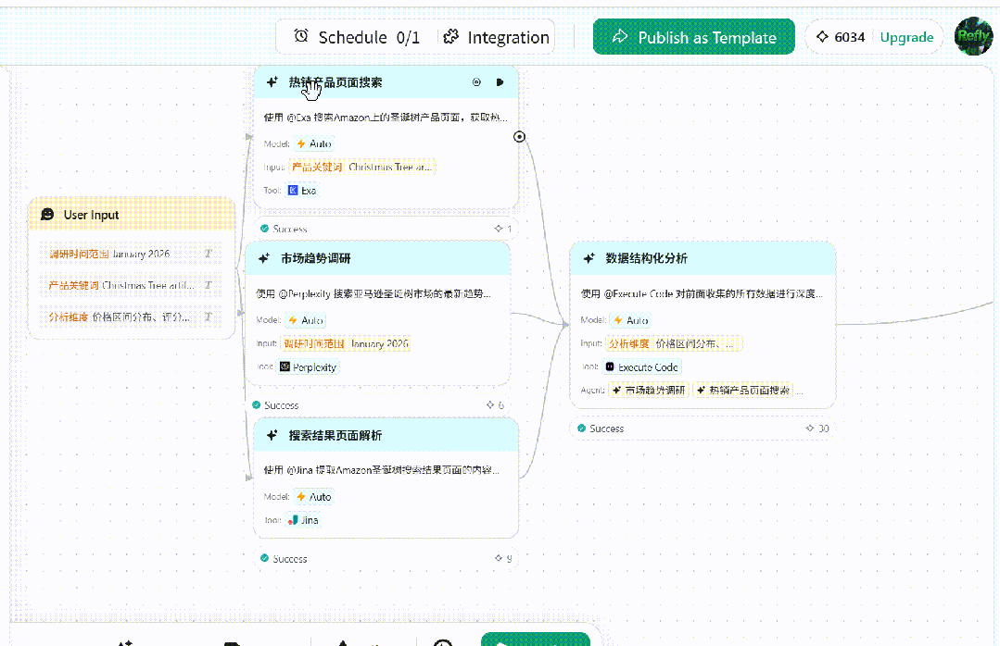
工作流确实是 Perplexity + Exa + Jina的组合
Exa进行产品搜索， Perplexity搜索产品特点，Jina提取页面内容
通过这种方式，只要手机打开Claude Code或者OpenClaw，输入需求，后台自动生成各种工作流。简直爽歪歪
03
Skills大集合
Refly Skills其实是一个Skills的大集合，里面包含了图片生成，视频生成，社交媒体，数据分析等各种Skills
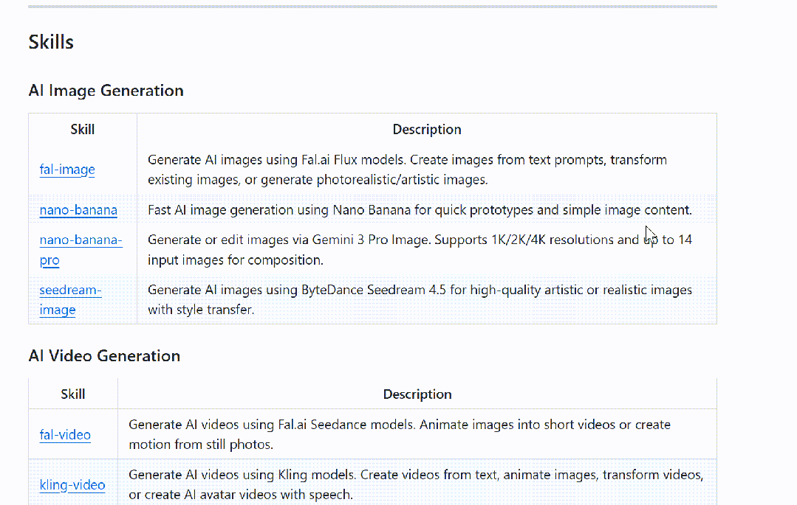
输入：帮我生成一个短视频并多平台发布
将调用video-creator 这个skill.
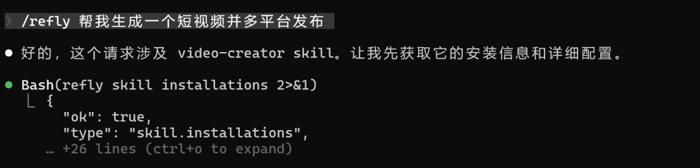
首先是确认视频的主题和发布平台
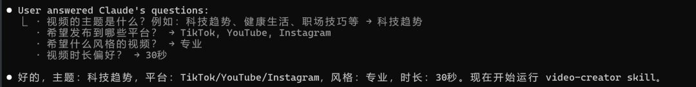
在生成的工作流上可以看到，包含了油管，tiktok,instagram,Facebook4个平台，不同风格的视频制作工作流
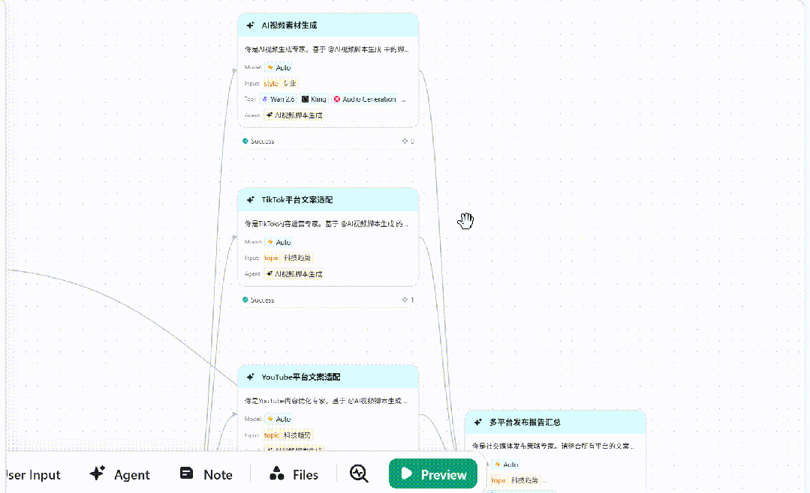
且在Claude Code上还远程调用执行了这个工作流，生成的视频都保存到了本地
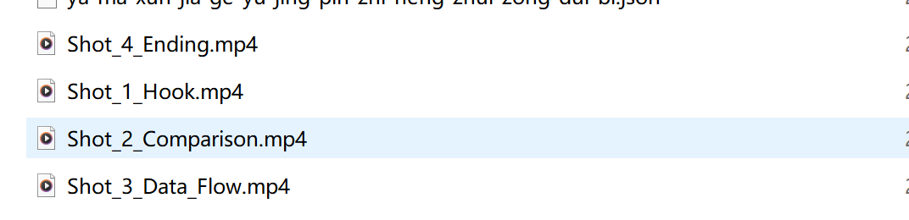
写在最后
这篇文章里我是用的CC来做演示，其实OpenClaw中也是一样的，安装好这个skills，就可以在聊天界面中给OpenClaw派活了
真正的实现工作流创作自由！
如果觉得内容不错的话，请帮一键三连，转发给你的朋友
另外想第一时间收到推送，记得将公众号加个星标哦
欢迎交流：jiangfeng2066